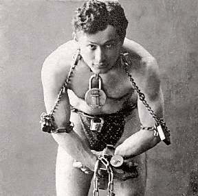

Борис Акунин
Мой календарь
Сегодня день рождения великого искейписта Гарри Гудини (1874 - 1926).
Был в конце девятнадцатого - начале двадцатого века такой популярный жанр иллюзионизма: человек на глазах у публики освобождался из пут или оков, выбирался из казалось бы наглухо запечатанного пространства и так далее. Это называлось «искейпология». Трудно объяснить тогдашнюю моду на искейпологию, впоследствии этот жанр потерял популярность. Вероятно, жизнь людей стала значительно свободней и идея избавления от пут подутратила свою магическую привлекательность.
А может быть, после Гарри Гудини развивать мастерство искейпа стало уже некуда. В наши времена винтажный фокус пробовал реанимировать иллюзионист Дэвид Копперфильд, но эффект был совсем не тот. Зрители знали, что всё это трюк и что жизни Копперфильда ничто не угрожает.
Гудини же делал всё по-настоящему и вполне мог погибнуть. Его сжигали заживо, хоронили, подвешивали в смирительной рубашке с подъемного крана. В 1912 году на глазах у огромной толпы заковали в кандалы, посадили в нагруженный свинцом деревянный ящик, заколотили крышку, сбросили в Ист-Ривер. Через 57 секунд Гудини вынырнул. Ящик потом вынули. В нем лежали кандалы, приколоченная крышка осталась нетронутой.
Многие фокусы великого искейписта не разгаданы до сих пор.
Давайте учиться у Гудини. В какие бы невозможные капканы ни ловила нас жизнь, на какие замки ни запирала бы, всегда можно найти способ освободиться. Гудини выбирался из ситуаций и похуже.